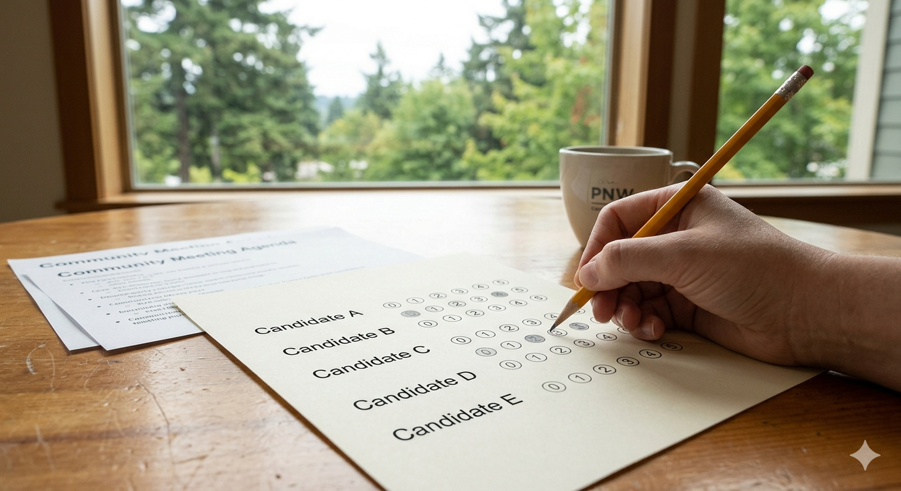
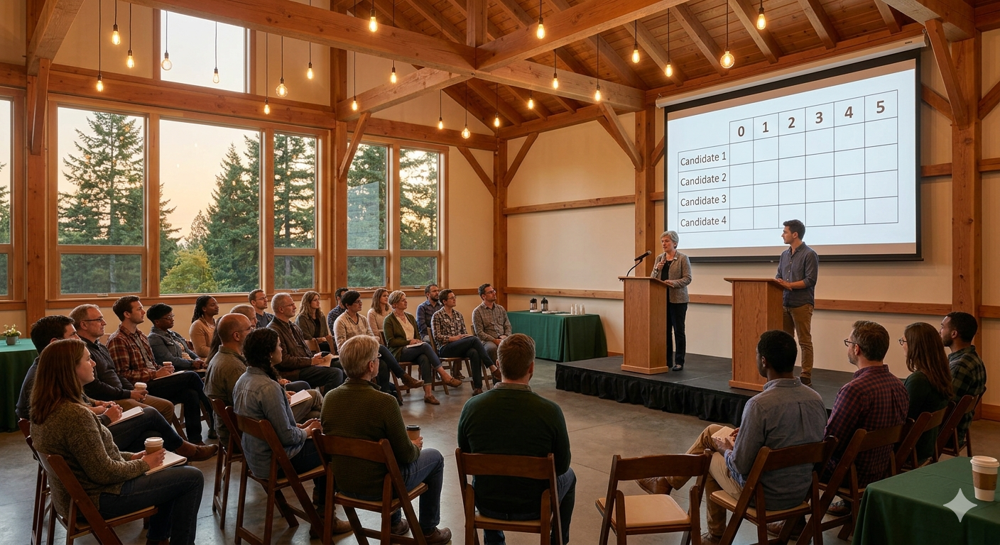

Every other improvement in your life — your phone, your car, your building's HVAC — benefited from decades of engineering refinement. Your HOA didn't. Arroyo Commons is changing that.
Learn the model →Your phone has an OLED screen because consumers pay a premium for better display technology. Nobody asked them to understand quantum tunneling — they just wanted a better screen. The same logic applies to community governance. Residents don't need to understand sortition theory. They just need to live somewhere that functions better, makes smarter decisions, and doesn't turn into an HOA nightmare. Arroyo Commons builds that community from the ground up, with better governance baked into the founding documents — not bolted on afterward when it's too late.
Before each HOA board election, all candidates present to a multi-day forum open to all residents. Presentations, Q&A, and cross-examination — not a 90-second stump speech. Remote participation is provided so no one is excluded by schedule or geography.
Every resident who attends the Forum is eligible to vote — that's the jury. Random by self-selection, not pre-screened. People who care enough to show up are the people who should elect the board. Their ballots are cast in secret.
Jury members score each candidate 0–5. The highest aggregate score wins. No strategic voting, no vote-splitting, no spoiler effect. The candidate most broadly preferred by the most people wins — every time, by design.

The governance model is protected by a layered legal structure under Washington state law. Each layer reinforces the others. No single actor — not a faction, not the city council, not a future board — can dismantle it alone.
The Declaration specifies EBJ governance, score voting, and Candidate Forum requirements. Filed with Clark County before any lot is sold. All buyers receive and sign acknowledgment. Amendment requires 80% of all unit owners — not just those voting.
Incorporate as a code city to prevent annexation by neighboring cities. The city council handles only what requires municipal authority: roads, utilities, police, fire, permits. All meaningful community decisions remain with the HOA.
The city's organizational documents include a voter-lock: any city action that would override the HOA Declaration requires a voter election, not just a council vote. The city council literally cannot amend the governance structure alone.
Upon reaching charter threshold, adopt a full city charter specifying score voting and deliberative structures for municipal elections. The HOA model and municipal model converge. EBJ governance now runs both the community association and the city itself.
Standard elections are structurally broken. They select for the ability to campaign — a completely different skill set from the ability to govern. They reward charisma, fundraising, and demagoguery. They produce officials who are systematically wealthier, more narcissistic, and more ideologically extreme than the populations they represent. Election by Jury replaces this broken mechanism with something we already trust for the highest-stakes decisions in our legal system: a randomly selected, deliberating jury that evaluates candidates on merit.
www.electionbyjury.org →
Arroyo Commons is in early development. We're looking for developers, investors, and future residents who understand that governance quality is a product — and want to help build the proof of concept.